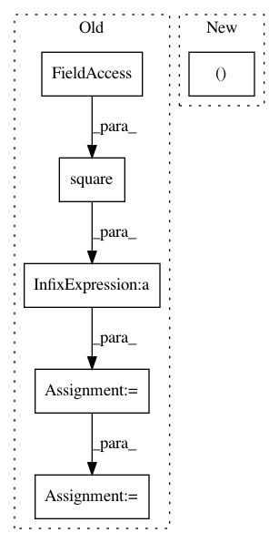

ecf0dc068059f7441bf8cfd20a66cc06b8e28f77,GPy/kern/linear.py,linear,dpsi2_dmuS,#linear#Any#Any#Any#Any#Any#Any#,170
Before Change
self._psi_computations(Z, mu, S)
AZZA = self.ZA.T[:, None, :, None] * self.ZA[None, :, None, :]
AZZA += AZZA.swapaxes(1, 2)
tmp = self.ZZ * np.square(self.variances) // M,M,Q
dS_old = (dL_dpsi2[:, :, :, None] * tmp).sum(1).sum(1)
import ipdb;ipdb.set_trace()
target_S += dS_old
dpsi2_dmu = (dL_dpsi2[:, :, :, None] * np.tensordot(mu, AZZA, ((-1), (0)))).sum(1).sum(1)
// twomu = mu[:,None,None,:,None] + mu[:,None,None,None,:]
// t = (dL_dpsi2[:, :, :, None, None] * tmp[None, :, :, :, None] * twomu).sum(1).sum(1).sum(1)
target_mu += dpsi2_dmu
After Change
self._psi_computations(Z, mu, S)
AZZA = self.ZA.T[:, None, :, None] * self.ZA[None, :, None, :]
AZZA = AZZA + AZZA.swapaxes(1, 2)
target_S += (dL_dpsi2[:, :, :, None] * self.ZA[None, :, None, :] * self.ZA[None, None, :, :]).sum(1).sum(1)
dpsi2_dmu = (dL_dpsi2[:, :, :, None] * np.tensordot(mu, AZZA, (-1, 0))).sum(1).sum(1)
target_mu += dpsi2_dmu
In pattern: SUPERPATTERN
Frequency: 3
Non-data size: 6
Instances
Project Name: SheffieldML/GPy
Commit Name: ecf0dc068059f7441bf8cfd20a66cc06b8e28f77
Time: 2013-05-03
Author: ibinbei@gmail.com
File Name: GPy/kern/linear.py
Class Name: linear
Method Name: dpsi2_dmuS
Project Name: bethgelab/foolbox
Commit Name: 66bd36230834da701e9ea1cea5062e2c1839a436
Time: 2017-06-16
Author: jonasrauber@users.noreply.github.com
File Name: foolbox/distances.py
Class Name: MeanSquaredDistance
Method Name: _calculate
Project Name: SheffieldML/GPy
Commit Name: 4aca883df35c670c1684200269c79e38f90452bc
Time: 2013-04-10
Author: james.hensman@gmail.com
File Name: GPy/kern/rbf.py
Class Name: rbf
Method Name: _psi_computations